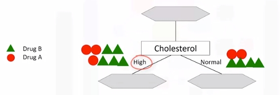
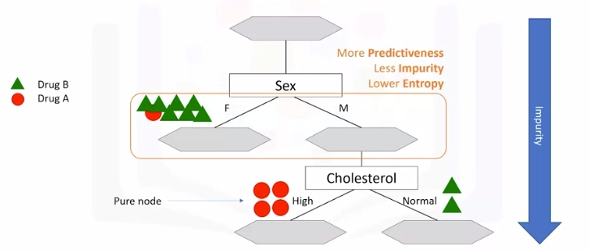
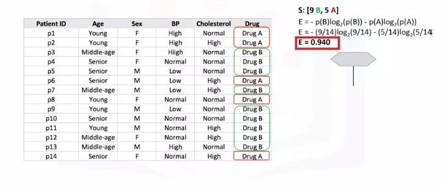
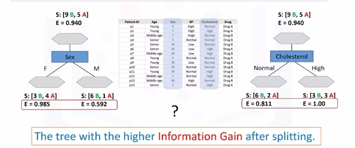
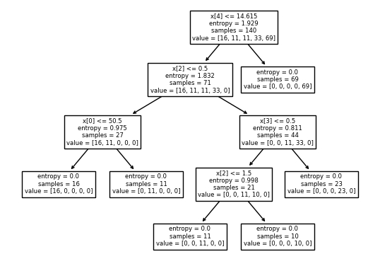
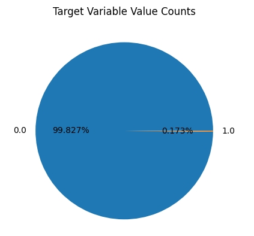
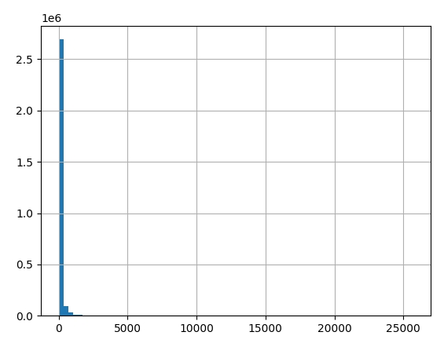
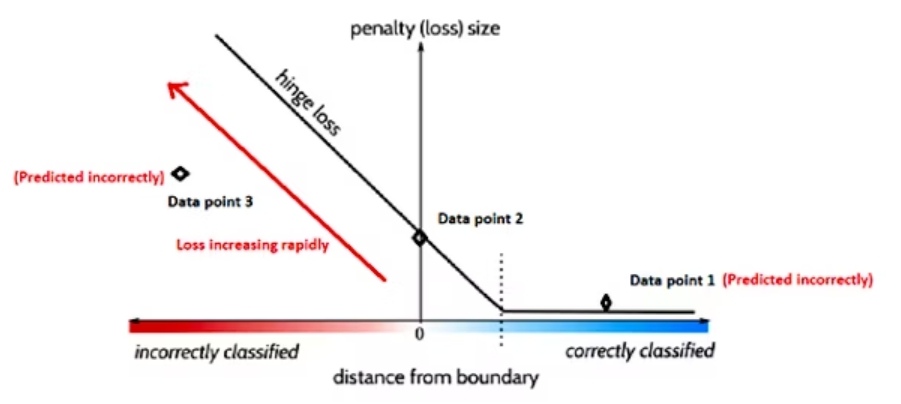

Decision Trees
Source: Machine_Learning_With_Python_IBM
What Is A Decision Tree
Image a csv with patients and demographics and the target is the drug that each patient responded to. Part of your job is to build a model to find out which drug might be appropriate for a future patient with the same illness.
| patient_id | age | sex | BP | cholesterol | drug |
|---|---|---|---|---|---|
| p1 | Young | F | High | Normal | Drug A |
| p2 | Young | F | High | High | Drug A |
| p3 | Middle-age | F | High | Normal | Drug B |
| p4 | Senior | F | Young | Normal | Drug B |

Note "B" is drug B and "A" is drug A.
- If Middle-age recommend drug B
- If either Young or Senior proceed to that branch and ask another relevant question...and so on
Building Decision Trees
Refer to above dataset again. Use recursive partitioning to classify the data. We need to determine which attribute is the best or more predictive to split data based on the feature. Let's choose Cholesterol.
-
If patient has high cholesterol we can't say with high confidence that drugB might be suitable. Same for normal.
 -
Let's try sex. It is seems much better but not perfect.

-
Let's got a step further
 -
For the male patient branch, we again test other attributes to split the sub-tree. We test cholesterol again here, as you can see it results in even more pure leaves. So we can easily make a decision here. For example, if a patient is male and his cholesterol is high, we can certainly prescribe drug A, but if it is normal, we can prescribe drug B with high confidence.
-
As you might notice, the choice of attribute to split data is very important and it is all about purity of the leaves after the split. A node in the tree is considered pure if in 100 percent of the cases, the nodes fall into a specific category of the target field.
Entropy
Impurity of nodes is calculated by entropy of data in the node. What is entropy? Entropy is the amount of information disorder or the amount of randomness in the data. The entropy in the node depends on how much random data is in that node and is calculated for each node. In decision trees, we're looking for trees that have the smallest entropy in their nodes.
- {"DrugA": 0, "DrugB": 8 } -> Entropy is 0
- {"DrugA": 1, "DrugB": 7 } -> Entropy is Low
- {"DrugA": 3, "DrugB": 5 } -> Entropy is High
- {"DrugA": 4, "DrugB": 4 } -> Entropy is 1
The lower the entropy , the less uniform the distribution.
\(Entropy = -p(A)\log_2(p(A)) - p(B)\log_2(p(B))\)
\(p(A)\) is the probability of drug A and is also x on the graph below
For reference: \(y(x)=log_2(x)\)
|
|
|----0.1----0.2----0.3----0.4----0.5----0.6----0.7----0.8----0.9---- . ----
| .
-1| .
| .
| .
-2| .
| .
| .
-3| .
- Calculate entropy before splitting it
 - After split

- Another node, which has the least entropy? The answer is the tree with the higher information gain after splitting.

Information Gain
Information gain is the information that can increase the level of certainty after splitting. It is the entropy of a tree before the split minus the weighted entropy after the split by an attribute. We can think of information gain and entropy as opposites.
As entropy or the amount of randomness decreases, the information gain or amount of certainty increases and vice versa.
\(Information Gain = (EntropyBeforeSplit) - (WeightedEntropyAfterSplit)\)
Ex:

Weights come from each node. For each decision, count total observations of that decision over total observations from both decisions
What we learn is that we should choose sex first when choosing between sex and cholesterol. How do we choose the next branch? Well, as you can guess, we should repeat the process for each branch and test each of the other attributes to continue to reach the most pure leaves.
Decision Tree Example 1 (Drug)
# Setup Environment
cd ~/Desktop; mkdir temp; cd temp; pyenv activate venv3.10.4;
# cd ~/Desktop; rm -r temp; # To remove
wget -o drug200.csv https://cf-courses-data.s3.us.cloud-object-storage.appdomain.cloud/IBMDeveloperSkillsNetwork-ML0101EN-SkillsNetwork/labs/Module%203/data/drug200.csv
import numpy as np
import pandas as pd
from sklearn.tree import DecisionTreeClassifier
import sklearn.tree as tree
from sklearn import preprocessing
from sklearn.model_selection import train_test_split
from sklearn import metrics
import matplotlib.pyplot as plt
path="drug200.csv"
my_data = pd.read_csv("drug200.csv", delimiter=",")
my_data[0:5]
# Remove the column containing the target name since it doesn't contain numeric values.
X = my_data[['Age', 'Sex', 'BP', 'Cholesterol', 'Na_to_K']].values
X[0:5]
# As you may figure out, some features in this dataset are categorical, such as __Sex__ or __BP__. Unfortunately, Sklearn Decision Trees does not handle categorical variables. We can still convert these features to numerical values using __LabelEncoder__ to convert the categorical variable into numerical variables.
le_sex = preprocessing.LabelEncoder()
le_sex.fit(['F','M'])
X[:,1] = le_sex.transform(X[:,1])
le_BP = preprocessing.LabelEncoder()
le_BP.fit([ 'LOW', 'NORMAL', 'HIGH'])
X[:,2] = le_BP.transform(X[:,2])
le_Chol = preprocessing.LabelEncoder()
le_Chol.fit([ 'NORMAL', 'HIGH'])
X[:,3] = le_Chol.transform(X[:,3])
X[0:5]
# Now we can fill the target variable.
y = my_data["Drug"]
y[0:5]
# We will be using train\test split on our decision tree.
# train_test_split will return 4 different parameters. We will name them X_trainset, X_testset, y_trainset, y_testset
X_trainset, X_testset, y_trainset, y_testset = train_test_split(X, y, test_size=0.3, random_state=3)
X_trainset.shape
y_trainset.shape
X_testset.shape
y_testset.shape
# We will first create an instance of the DecisionTreeClassifier called drugTree.
# Inside of the classifier, specify criterion='entropy' so we can see the information gain of each node.
drugTree = DecisionTreeClassifier(criterion="entropy", max_depth = 4)
drugTree # it shows the default parameters
# Next, we will fit the data with the training feature matrix <b> X_trainset </b> and training response vector <b> y_trainset </b>
drugTree.fit(X_trainset,y_trainset)
# Let's make some predictions on the testing dataset and store it into a variable called predTree.
predTree = drugTree.predict(X_testset)
print (predTree [0:5])
print (y_testset [0:5])
# Evaluation:
# use metrics and check accuracy of our model
print("DecisionTrees's Accuracy: ", metrics.accuracy_score(y_testset, predTree))
# Visualization
tree.plot_tree(drugTree)
plt.show()

Decision Tree Example 2 (Credit Card Fraud)
classification_tree_svm.ipynb We will be exploring a decision tree and a support vector machine (SVM) to recognize fraudulent credit card transactions. You will use the trained model to assess if a credit card transaction is legitimate or not.
After completing this lab you will be able to: * Perform basic data preprocessing in Python * Model a classification task using the Scikit-Learn and Snap ML Python APIs * Train Suppport Vector Machine and Decision Tree models using Scikit-Learn and Snap ML * Run inference and assess the quality of the trained models
A transaction belongs to the positive class (1) if it is a fraud, otherwise it belongs to the negative class (0). You have access to transactions that occured over a certain period of time. The majority of the transactions are normally legitimate and only a small fraction are non-legitimate. Thus, typically you have access to a dataset that is highly unbalanced. This is also the case of the current dataset: only 492 transactions out of 284,807 are fraudulent (the positive class - the frauds - accounts for 0.172% of all transactions).
To train the model you can use part of the input dataset and the remaining data can be used to assess the quality of the trained model. First, let's download the dataset.
# Setup Environment
cd ~/Desktop; mkdir temp; cd temp; pyenv activate venv3.10.4;
# cd ~/Desktop; rm -r temp; # To remove
import opendatasets as od
# download the dataset (this is a Kaggle dataset)
# during download you will be required to input your Kaggle username and password
od.download("https://www.kaggle.com/mlg-ulb/creditcardfraud")
# Import the libraries we need to use in this lab
from __future__ import print_function
import numpy as np
import pandas as pd
import matplotlib.pyplot as plt
from sklearn.model_selection import train_test_split
from sklearn.preprocessing import normalize, StandardScaler
from sklearn.utils.class_weight import compute_sample_weight
from sklearn.metrics import roc_auc_score
import time
import warnings
# import the Decision Tree Classifier Model from scikit-learn
from sklearn.tree import DecisionTreeClassifier
# import the linear Support Vector Machine (SVM) model from Scikit-Learn
from sklearn.svm import LinearSVC
# import the hinge_loss metric from scikit-learn
from sklearn.metrics import hinge_loss
warnings.filterwarnings('ignore')
# read the input data
raw_data = pd.read_csv('creditcardfraud/creditcard.csv')
print("There are " + str(len(raw_data)) + " observations in the credit card fraud dataset.")
print("There are " + str(len(raw_data.columns)) + " variables in the dataset.")
# display the first rows in the dataset
raw_data.head()
# In practice, a financial institution may have access to a much larger dataset of transactions. To simulate such a case, we will inflate the original one 10 times.
n_replicas = 10
# inflate the original dataset
big_raw_data = pd.DataFrame(np.repeat(raw_data.values, n_replicas, axis=0), columns=raw_data.columns)
print("There are " + str(len(big_raw_data)) + " observations in the inflated credit card fraud dataset.")
print("There are " + str(len(big_raw_data.columns)) + " variables in the dataset.")
# display first rows in the new dataset
big_raw_data.head()
big_raw_data.shape
# 'Class' is the target variable (1-fraud 0-otherwise)
# get the set of distinct classes
labels = big_raw_data.Class.unique()
# get the count of each class
sizes = big_raw_data.Class.value_counts().values
# plot the class value counts
fig, ax = plt.subplots()
ax.pie(sizes, labels=labels, autopct='%1.3f%%')
ax.set_title('Target Variable Value Counts')
plt.show()

# generate historgram of amounts spent per transaction
big_raw_data['Amount'].hist(bins=75)
plt.show()
big_raw_data['Amount'].describe()

# Data preprocessing such as scaling/normalization is typically useful for
# linear models to accelerate the training convergence.
# Standardize features by removing the mean and scaling to unit variance.
big_raw_data.iloc[:, 1:30] = StandardScaler().fit_transform(big_raw_data.iloc[:, 1:30])
data_matrix = big_raw_data.values
big_raw_data.head()
# X: feature matrix (for this analysis, we exclude the Time variable from the dataset)
X = data_matrix[:, 1:30]
# y: labels vector
y = data_matrix[:, 30]
# data normalization
X = normalize(X, norm="l1")
# print the shape of the features matrix and the labels vector
print('X.shape=', X.shape, 'y.shape=', y.shape)
# train\test split
X_train, X_test, y_train, y_test = train_test_split(X, y, test_size=0.3, random_state=42, stratify=y)
print('X_train.shape=', X_train.shape, 'Y_train.shape=', y_train.shape)
print('X_test.shape=', X_test.shape, 'Y_test.shape=', y_test.shape)
# Compute the sample weights to be used as input to the train routine so that
# it takes into account the class imbalance present in this dataset.
w_train = compute_sample_weight('balanced', y_train)
# for reproducible output across multiple function calls, set random_state to a given integer value
sklearn_dt = DecisionTreeClassifier(max_depth=4, random_state=35)
# train a Decision Tree Classifier using scikit-learn
t0 = time.time()
sklearn_dt.fit(X_train, y_train, sample_weight=w_train)
sklearn_time = time.time()-t0
print("[Scikit-Learn] Training time (s): {0:.5f}".format(sklearn_time))
# run inference and compute the probabilities of the test samples
# to belong to the class of fraudulent transactions
sklearn_pred = sklearn_dt.predict_proba(X_test)[:,1]
# evaluate the Compute Area Under the Receiver Operating Characteristic
# Curve (ROC-AUC) score from the predictions
sklearn_roc_auc = roc_auc_score(y_test, sklearn_pred)
print('[Scikit-Learn] ROC-AUC score : {0:.3f}'.format(sklearn_roc_auc))
# instatiate a scikit-learn SVM model
# to indicate the class imbalance at fit time, set class_weight='balanced'
# for reproducible output across multiple function calls, set random_state to a given integer value
sklearn_svm = LinearSVC(class_weight='balanced', random_state=31, loss="hinge", fit_intercept=False)
# train a linear Support Vector Machine model using Scikit-Learn
t0 = time.time()
sklearn_svm.fit(X_train, y_train)
sklearn_time = time.time() - t0
print("[Scikit-Learn] Training time (s): {0:.2f}".format(sklearn_time))
# run inference using the Scikit-Learn model
# get the confidence scores for the test samples
sklearn_pred = sklearn_svm.decision_function(X_test)
# evaluate accuracy on test set
acc_sklearn = roc_auc_score(y_test, sklearn_pred)
print("[Scikit-Learn] ROC-AUC score: {0:.3f}".format(acc_sklearn))
Note: Decision function is a method present in classifier{ SVC, Logistic Regression } class of sklearn machine learning framework. This method basically returns a Numpy array, In which each element represents whether a predicted sample for x_test by the classifier lies to the right or left side of the Hyperplane and also how far from the HyperPlane.
Decision Tree Versus Support Vector Machine
Chat GPT Prompt: What are the primary similarities and differences between decision trees and support vector machines?
Decision trees and support vector machines (SVMs) are both machine learning algorithms used for classification and regression tasks, but they have different approaches and characteristics. Here are the primary similarities and differences between decision trees and support vector machines:
Similarities:
-
Supervised Learning: Both decision trees and SVMs are supervised learning algorithms, which means they require labeled training data to make predictions.
-
Classification and Regression: Both algorithms can be used for both classification and regression tasks. Decision trees are versatile in this regard, while SVMs are often used for classification but can also be adapted for regression.
Differences:
- Algorithmic Approach:
Decision Trees: Decision trees use a tree-like structure to make decisions. They recursively split the data into subsets based on the features that provide the most information gain or reduction in impurity (e.g., Gini impurity or entropy).
Support Vector Machines: SVMs aim to find a hyperplane that best separates data points into different classes while maximizing the margin (distance) between the hyperplane and the nearest data points (support vectors).
- Linearity:
Decision Trees: Decision trees can handle both linear and non-linear relationships between features and the target variable. They can model complex decision boundaries.
Support Vector Machines: SVMs are inherently designed for linear separation, but they can be extended to handle non-linear data by using kernel tricks (e.g., polynomial kernels or radial basis function kernels).
- Interpretability:
Decision Trees: Decision trees are highly interpretable. You can easily visualize the decision-making process as a tree, making it easier to understand how the model arrived at a particular prediction.
Support Vector Machines: SVMs are less interpretable by nature, as the decision boundary is defined by a hyperplane in a high-dimensional space, which is not as intuitive as a decision tree.
- Overfitting:
Decision Trees: Decision trees are prone to overfitting when they become too deep and complex. Techniques like pruning and setting maximum depth can help mitigate this issue.
Support Vector Machines: SVMs are less prone to overfitting, especially when using a large margin (C parameter) and appropriate kernel functions. They tend to generalize well to new data.
- Handling Imbalanced Data:
Decision Trees: Decision trees can be biased towards the majority class in imbalanced datasets, as they tend to choose the splits that minimize impurity, which may not be ideal for the minority class.
Support Vector Machines: SVMs can handle imbalanced data better because they aim to maximize the margin and are less influenced by class distribution.
- Computation and Memory Requirements:
Decision trees are generally computationally less expensive and require less memory compared to SVMs, especially when dealing with large datasets.
In summary, the choice between decision trees and SVMs depends on the specific characteristics of your dataset and the interpretability requirements. Decision trees are often favored for their simplicity and interpretability, while SVMs are powerful for cases where finding a well-defined margin is essential or when dealing with high-dimensional data.
Practice
In this section you will evaluate the quality of the SVM models trained above using the hinge loss metric (https://scikit-learn.org/stable/modules/generated/sklearn.metrics.hinge_loss.html). Run inference on the test set using both Scikit-Learn and Snap ML models. Compute the hinge loss metric for both sets of predictions. Print the hinge losses of Scikit-Learn and Snap ML.
# get the confidence scores for the test samples
sklearn_pred = sklearn_svm.decision_function(X_test)
# evaluate the hinge loss metric from the predictions
loss_sklearn = hinge_loss(y_test, sklearn_pred)
print("[Scikit-Learn] Hinge loss: {0:.3f}".format(loss_sklearn))
Hinge Loss
Hinge loss is a function popularly used in support vector machine algorithms to measure the distance of data points from the decision boundary. This helps approximate the possibility of incorrect predictions and evaluate the model's performance.
